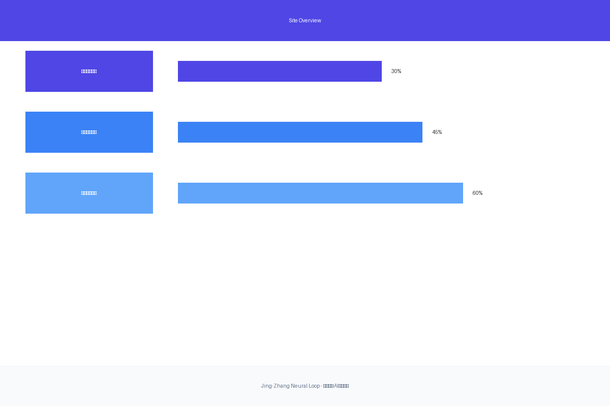
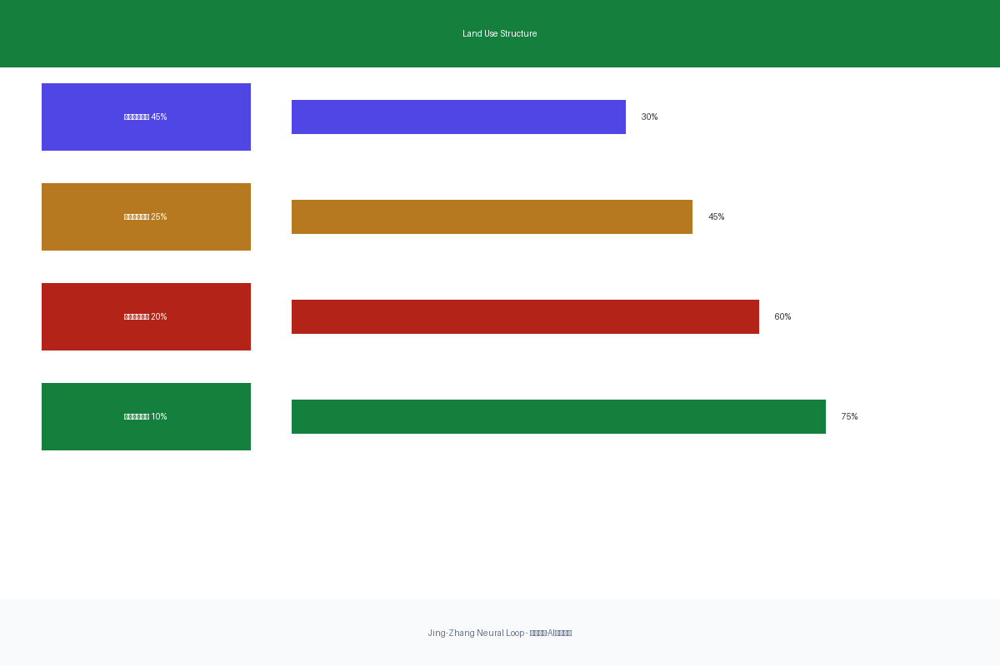
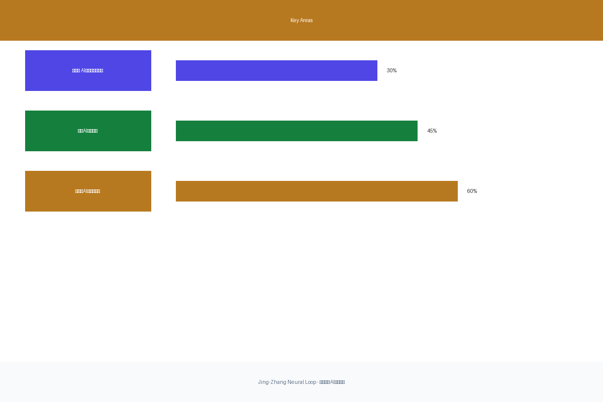
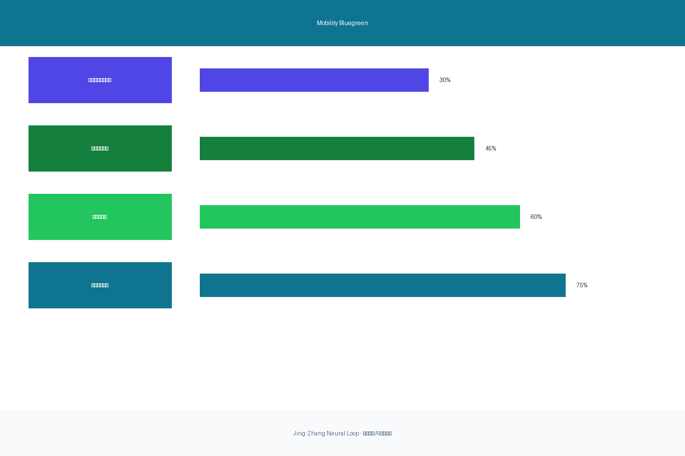
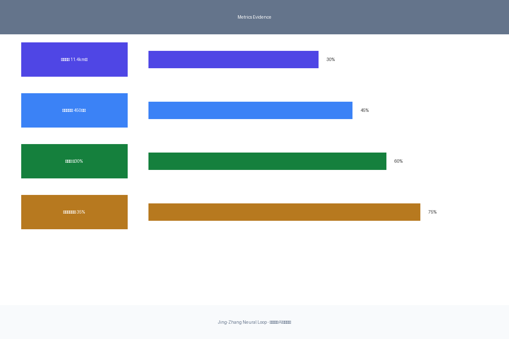

京张智脉·AI创新走廊
Using 'neural network' as spatial metaphor, combining the historical context of the centennial Jing-Zhang Railway with the connectivity innovation of the AI era, creating a 'breathable, evolvable, collaborative' urban agent ecosystem.
Jing-Zhang Neural Loop
京张智脉·AI创新走廊
Design Basis and Source List
This proposal takes the "International Open Call for Urban Design of Centennial Jing-Zhang AI Innovation Belt" pre-qualification announcement from Beijing Municipal Planning and Natural Resources Commission Haidian Branch as the primary basis来源, and follows the six agent tasks, ten co-creation principles, and unified boundary clauses from the Agent Taskbook来源.
The proposal uses provisional boundaries provided by the repository as the design work basis来源, with all spatial judgments clearly marked as official_boundary=false and geometry_role="provisional_constraint", subject to unified recalculation when official precise boundaries are released空间数据空间数据.
Core Sources
- Official Announcement: Project name, organizers, three-level scope, design tasks, submission depth来源
- Agent Taskbook: Six agent tasks, co-creation principles, review dimensions来源
- Provisional Boundaries: Temporary rough scope, key areas来源
- Professional Standards: Urban design preparation depth, regulatory planning depth requirements来源来源
Data Precision Note
All spatial data used in this proposal are provisional in nature and cannot serve as official redlines, approval bases, or precise area bases. When official boundaries are released, all layers, metrics, and drawings must be recalculated and updated.

Three-Level Scope Framework
The proposal adopts a "three-level progressive, spatial implementation" working method:
Coordinated Research Scope (43.6 km²)
Focuses on AI innovation ecosystem construction, global case benchmarking, and future city forms. Through analyzing Haidian's universities, research institutes, leading enterprises, computing-algorithm-data elements, it establishes an innovation chain spatial collaboration framework of "university sourcing - open collaboration - enterprise transformation - public experience - international communication"深度.
Overall Design Scope (11.4 km²)
Forms urban renewal overall framework, industrial spatial layout, transport-municipal support, and urban character control空间数据. With Jing-Zhang Railway Heritage Park as the main axis, connecting three key areas, it constructs a spatial organization of "one belt, three cores, multiple scenario nodes, blue-green slow mobility compound loop"深度.
Key Area Scope (368.4 hectares)
Aims to reach comprehensive planning implementation plan depth for three areas空间数据, clarifying functional formats, building scale, retain-renovate-demolish classification, public space connectivity, and traffic organization深度.

Coordinated Research Area: Industry and Future City Research
Global AI Innovation Ecosystem Case Benchmarking
The proposal studies and draws lessons from the following global AI innovation ecosystem cases, proposing development concepts suitable for Haidian标准:
| Case Name | Core Features | Transferable Elements |
|---|---|---|
| Silicon Valley Sand Hill Road | Venture capital + founder density | Capital empowerment mechanism of Zhongguancun Tech Service Wing |
| London Kensington Creative District | Near-campus innovation + tech transfer | Campus-park-district stitching of AI Origin Community |
| Boston Seaport District | Smart bio + urban renewal | Intelligent-native commercial renewal of Dazhongsi |
| NYC Hudson Yards | Urban renewal + future office | Low-carbon innovation environment of Zhongzhiyuan |
| Paris Saclay Tech Valley | Large facilities + interdisciplinary collaboration | R&D collaboration space for full-stack innovation |
| Shenzhen Bay Tech Ecology Park | Private tech + scenario opening | Scenario opening mechanism of Xiaoyuehe Wing |
| Tokyo Shinagawa AI Development Zone | Smart transport + urban office | Rail station integration + smart commuting |
| Toronto Waterfront | Smart city + PPP | AI governance test scenarios & data sharing |
AI Innovation Ecosystem Map
The proposal constructs an "eight innovation elements" ecosystem map: 1. **Computing Infrastructure** - Edge computing nodes + distributed computing network 2. **Algorithm Open Platforms** - Model open-sourcing + standard setting + safety governance 3. **Data Factor Markets** - Data trading + privacy computing + compliance audit 4. **Industry Incubation Carriers** - Shared testing fields + PoC centers 5. **Talent Service Network** - Talent special zone + international exchange + life support 6. **Capital Service Channels** - Venture capital + industrial funds + IPO services 7. **Scenario Opening Spaces** - AI+ public services + industry test scenarios 8. **Governance Rule Systems** - AI ethics + algorithm review + international rule dialogue

Overall Design Area: Urban Renewal and Regulatory-Plan-Level Urban Design
Overall Concept: Jing-Zhang Neural Symbiosis Belt
**Design Philosophy**: Using "neural network" as spatial metaphor, combining the linear historical context of the centennial Jing-Zhang Railway with the multidimensional connectivity innovation of the AI era. Like synaptic connections in neural networks, various nodes in the innovation belt stimulate each other through high-speed information, talent, and creative flows, forming a "breathable, evolvable, collaborative" urban agent ecosystem.
**Spatial Structure**: "One Belt, Three Cores, Multiple Scenario Nodes, Blue-Green Slow Mobility Compound Loop"
- **One Belt**: Jing-Zhang Heritage Park AI culture axis, carrying historical narrative and innovation display
- **Three Cores**: Zhongzhiyuan (independent innovation), AI Origin Community (innovation ecosystem), Dazhongsi (intelligent commerce)
- **Multiple Scenario Nodes**: 15 AI+ scenario nodes, covering transport, medical, education, commerce, culture
- **Compound Loop**: Qinghe-Xiaoyuehe blue-green slow mobility loop, connecting work-life-leisure
Land Use Structure and Building Scale
空间数据 land use structure follows these principles:
- **Innovation Industrial Land** (Mx/B9): 45%, focused on three key areas and rail station surroundings
- **Supporting Service Land** (B/C): 25%, prioritized in 15-minute life circles
- **Residential Life Land** (R): 20%, ensuring talent proximity living
- **Green Public Space** (G/S): 10%, forming continuous blue-green network
指标 estimated total GFA approximately 4.5 million m², including:
- R&D office space: 60% (2.7 million m²)
- Innovation service facilities: 20% (0.9 million m²)
- Talent living facilities: 15% (0.675 million m²)
- Cultural display facilities: 5% (0.225 million m²)
Transport, Rail, Municipal Infrastructure, and Public Services
**Transport Organization**空间数据:
- Rail station integration: Wudaokou, Dazhongsi, Qinghua East Road West Mouth TOD development
- Micro-circulation optimization: Opening dead-end roads, densifying secondary network, improving slow mobility connectivity
- Smart transport system: AI signal optimization, autonomous driving test zone, smart parking guidance
- Blue-green slow network: Qinghe-Xiaoyuehe cycling path + pedestrian path continuous connection
**Public Service Facilities**:
- Innovation service platforms: Achievement release halls (3), PoC centers (2)
- Talent life services: Talent apartments (300,000 m²), international school (1)
- Cultural facilities: AI museum (1), digital art spaces (2)
- Sports facilities: Smart gyms (5), outdoor sports fields (10)

Detailed Design of Key Areas
Zhongzhiyuan AI Independent Innovation Acceleration Area (192.1 hectares)
**Design Positioning**: Garden-style full-stack independent innovation district, focusing on AI chip, framework, model, and application full-chain innovation.
**Spatial Actions**空间数据: 1. Strengthen Qinghe waterfront, create waterfront innovation interaction belt 2. Layout national AI platform, reserve flexible development space 3. Create low-carbon computing experience zone, demonstrating green AI technologies 4. Organize external transport, establish convenient connections with North 5th Ring Road and Qinghe
**AI Industry and Operation Scenarios**:
- Independent model testing field: Open to startups for new technology validation
- Standard-setting workshops: Regular AI safety, ethics, and standards seminars
- Safety governance display: AI algorithm review, privacy computing demonstrations
- Low-carbon innovation interaction: Green computing experience, carbon-neutral innovation workshops
Beijing AI Origin Community (104.3 hectares)
**Design Positioning**: Near-campus achievement transformation and talent community, strengthening campus-park-district stitching.
**Spatial Actions**空间数据: 1. Organize campus-park-district slow mobility stitching, 5-minute accessibility circles 2. Supplement achievement release spaces, create 24-hour innovation release hall 3. Build talent service special zone, provide one-stop government services 4. Perfect residential life facilities, talent apartments + community commerce
**AI Industry and Operation Scenarios**:
- Open source community collaboration: Public code walls, collaborative programming spaces
- Achievement release platform: Roadshow halls, media centers, livestreaming
- Talent special zone services: Work permits, housing support, children's education
- Near-campus incubation: University tech transfer offices, PoC funds
Dazhongsi AI Industry Cluster (72.0 hectares)
**Design Positioning**: Urban intelligent economy and international exchange district, featuring agents and intelligent terminal displays.
**Spatial Actions**空间数据: 1. Dazhongsi station integration, four-quadrant pedestrian connectivity 2. Agent display center, creating AI pilgrimage destination 3. Commercial service upgrade, smart retail, immersive experiences 4. Planned green space composite use, AI-themed outdoor displays
**AI Industry and Operation Scenarios**:
- Agent and intelligent terminal displays: Robotics, AR/VR, brain-computer interfaces
- Content consumption scenarios: AI creation exhibitions, digital art trading
- Data factor trading: Data exchange, privacy computing platforms
- International roadshow center: Global AI project releases, cross-border investment matchmaking
AI Innovation Ecosystem, Personas, and AI+ Scenarios
User Personas (5 Types)
| Persona | Core Needs | Spatial Response | Typical Scenarios |
|---|---|---|---|
| **Open Source Developer** | Publishing, collaboration, testing, community reputation | Origin community release hall, public code walls | Submit new model to open platform, get community feedback |
| **Startup Team** | Low-cost office, computing access, product testing ground | Zhongzhiyuan shared testing field, edge computing service points | Validate algorithm at shared testing field, seek early investment |
| **Enterprise Visitor** | Display, business, international reception, talent recruitment | Dazhongsi international roadshow lounge, enterprise display spaces | Present latest AI products to international clients |
| **University Researcher | Industry-academia collaboration, data access, paper publishing | Campus collaboration labs, data sandboxes, academic release halls | Complete paper through enterprise collaboration, technology transfer |
| **Community Resident** | AI education, convenient services, public activities | Community AI learning center, smart convenience stores, cultural events | Participate in AI popular science activities, use smart services |
AI+ Scenario Cards (10)
Scenario 1: AI Smart Commuting
- **Location**: Wudaokou-Dazhongsi rail corridor
- **Users**: Commuters, tourists, delivery personnel
- **Technologies**: AI signal optimization, autonomous shuttle, smart parking guidance
- **Data Sources**: Traffic flow, OD patterns, real-time road conditions
- **Privacy Boundary**: Aggregated statistics only, no personal trajectory storage
- **Human Review**: Manual intervention for anomalies, emergency takeover retained
Scenario 2: AI+ Education
- **Location**: AI Origin Community education innovation zone
- **Users**: K-12 students, university students, lifelong learners
- **Technologies**: Personalized learning paths, AI tutors, smart assessment
- **Data Sources**: Learning behavior, knowledge graphs, educational resources
- **Privacy Boundary**: Minor data encrypted storage, parent full control
- **Human Review**: Teachers retain final educational decisions
Scenario 3: AI+ Healthcare
- **Location**: Community health centers, tertiary hospital networks
- **Users**: Residents, patients, medical staff
- **Technologies**: Smart triage, diagnostic assistance, health prediction
- **Data Sources**: Electronic medical records, health archives, medical knowledge bases
- **Privacy Boundary**: HIPAA-compliant standards, data within domain
- **Human Review**: Doctors retain diagnosis authority, AI assistance only
Scenario 4: AI+ Cultural Touring
- **Location**: Jing-Zhang Heritage Park corridor
- **Users**: Tourists, citizens, culture enthusiasts
- **Technologies**: AR historical recreation, smart interpretation, culture recommendations
- **Data Sources**: Historical materials, artifact information, user preferences
- **Privacy Boundary**: No facial collection, optional anonymous mode
- **Human Review**: Cultural experts review content accuracy
Scenario 5: AI+ Open Office
- **Location**: Zhongzhiyuan, AI Origin Community
- **Users**: Startups, freelancers, enterprise employees
- **Technologies**: Smart meeting rooms, desk scheduling, environment optimization
- **Data Sources**: Usage patterns, environmental sensors, reservation records
- **Privacy Boundary**: No work content monitoring, space usage statistics only
- **Human Review**: Users can disable data collection anytime
Scenario 6: AI+ Retail
- **Location**: Dazhongsi commercial district, neighborhood commerce
- **Users**: Consumers, merchants, delivery personnel
- **Technologies**: Smart recommendations, unmanned checkout, smart replenishment
- **Data Sources**: Purchase records, inventory data, footfall statistics
- **Privacy Boundary**: No personal identity linkage, data anonymized
- **Human Review**: Manual customer service and return channels retained
Scenario 7: AI+ Public Safety
- **Location**: Key area public spaces, transport nodes
- **Users**: Citizens, emergency responders, managers
- **Technologies**: Anomaly detection, smart alerts, emergency dispatch
- **Data Sources**: Cameras, sensors, alarm systems
- **Privacy Boundary**: Data protection compliant, minimized collection
- **Human Review**: All alerts require manual confirmation before action
Scenario 8: AI+ Environmental Governance
- **Location**: Qinghe-Xiaoyuehe blue-green spaces
- **Users**: Environmental departments, citizens, researchers
- **Technologies**: Water quality monitoring, pollution tracing, smart purification
- **Data Sources**: Environmental sensors, satellite remote sensing, tip-offs
- **Privacy Boundary**: No personal behavior collection, environmental indicators only
- **Human Review**: Environmental department retains decision authority
Scenario 9: AI+ Developer Community
- **Location**: AI Origin Community open collaboration spaces
- **Users**: Open source developers, project maintainers, contributors
- **Technologies**: Code review assistants, smart collaboration, contribution rankings
- **Data Sources**: Code repositories, contribution records, community data
- **Privacy Boundary**: Following open source licenses, respecting contributor wishes
- **Human Review**: Project maintainers retain merge decisions
Scenario 10: AI+ Urban Governance
- **Location**: Urban management command centers, community service stations
- **Users**: Government, citizens, enterprises
- **Technologies**: Smart approvals, policy simulation, sentiment analysis
- **Data Sources**: Government data, public service data, feedback
- **Privacy Boundary**: Government data classified by level, access by permission
- **Human Review**: Manual approval channels and appeal mechanisms retained
Validation Scenarios (3)
Validation Scenario 1: Autonomous Driving Bus Testing
- **Location**: Zhongzhiyuan-Qinghe corridor
- **Content**: L4 autonomous bus in complex urban scenarios
- **Metrics**: Safe mileage, takeover rate, passenger satisfaction
- **Operator**: Autonomous driving company + bus group joint operation
Validation Scenario 2: AI Medical Diagnostic Assistance
- **Location**: Regional medical center
- **Content**: Comparative validation of AI-assisted diagnosis vs. manual diagnosis
- **Metrics**: Diagnostic accuracy, misdiagnosis rate, doctor acceptance
- **Operator**: Tertiary hospital + AI medical company collaboration
Validation Scenario 3: Smart Traffic Signal Optimization
- **Location**: Wudaokou-Dazhongsi transport corridor
- **Content**: AI signal optimization system traffic efficiency improvement
- **Metrics**: Travel time, waiting time, carbon emission reduction
- **Operator**: Transport management department + AI technology company

Land Use, Building Scale, and Retain-Renovate-Demolish Strategy
Land Use Structure
空间数据 land use structure based on provisional boundaries, following allocation principles指标:
| Land Use Type | Area (ha) | Percentage | Layout Principles |
|---|---|---|---|
| Innovation Industrial (Mx/B9) | 513 | 45% | Key areas, rail station surroundings |
| Supporting Services (B/C) | 285 | 25% | 15-minute life circle coverage |
| Residential Life (R) | 228 | 20% | Talent apartments, community living |
| Green Public Space (G/S) | 114 | 10% | Blue-green network, parks plazas |
Building Scale and Retain-Renovate-Demolish Strategy
指标 total GFA approximately 4.5 million m², strategy as follows:
| Category | Area (10k m²) | Percentage | Strategy Description |
|---|---|---|---|
| **Retain-Renovate** | 180 | 40% | Retain valuable buildings, function upgrade |
| **Improve-Upgrade** | 135 | 30% | Facade renovation, public space optimization |
| **Demolish-Rebuild** | 135 | 30% | Inefficient land demolition, new construction per planning |
Retain priorities: University-adjacent research buildings, historically valuable buildings, recent completions Demolish priorities: Inefficient industrial-storage, illegal/temporary constructions, traffic-conflicting buildings
Development Intensity Controls
- **Average FAR**: Approximately 2.5 (based on provisional area, pending official data recalculation)
- **Building Height Control**: 40-60m in key area cores, 18-30m in general areas
- **Building Density**: 30-40%, ensuring ample public space
- **Green Ratio**: ≥30%, forming continuous blue-green network
*Note: Above metrics are conceptual recommendations; specific control indicators pending official regulatory planning confirmation*
Transport, Rail, Municipal Infrastructure, and Public Services
Rail Station Integrated Development
**Wudaokou Station (Line 13/Line 15)**:
- Function: AI Origin Community core hub
- Spatial Actions: Four-quadrant pedestrian connectivity, underground development, deck complex
- Facilities: Innovation service center, talent service window, achievement release hall
**Dazhongsi Station (Line 12/Line 13)**:
- Function: AI Industry Cluster external gateway
- Spatial Actions: Station plaza renovation, underground passage connectivity, commercial complex
- Facilities: Agent display center, international roadshow hall, enterprise service spaces
**Qinghua East Road West Mouth Station (Line 15)**:
- Function: Connecting universities with innovation belt
- Spatial Actions: Campus-park slow mobility stitching, underground passage extension
- Facilities: Industry-academia cooperation center, tech transfer office
Road Transport System
空间数据 transport organization follows these principles:
- **Main arterial network**: North 5th Ring, Xueyuan Road, Xitucheng Road forming skeleton
- **Secondary network**: Densifying branch roads, opening dead-ends, optimizing micro-circulation
- **Slow mobility system**: Qinghe-Xiaoyuehe cycling path + pedestrian path continuous connection
- **Parking system**: Smart parking guidance, shared parking, underground parking optimization
Municipal and Public Service Facilities
**New Infrastructure**:
- Edge computing nodes: 1 per key area, meeting low-latency AI applications
- 5G/6G network: Full coverage, supporting high concurrency, low latency scenarios
- IoT sensing: Environmental monitoring, smart lighting, smart manholes
- Distributed energy: Rooftop PV, storage systems, microgrids
**Public Service Facilities**:
- Innovation services: Achievement release halls (3), PoC centers (2)
- Talent services: Talent apartments (300,000 m²), international school (1)
- Cultural facilities: AI museum (1), digital art spaces (2)
- Sports facilities: Smart gyms (5), outdoor sports fields (10)
Blue-Green Network, Public Space, and Urban Character
Blue-Green Network Structure
空间数据空间数据
**Qinghe Blue-Green Axis**:
- Waterfront promenade: 6km continuous slow mobility path
- Waterfront nodes: Innovation interaction nodes, cultural display nodes, ecological nodes
- Waterfront activities: Water sports, riverside markets, art installations
**Xiaoyuehe Green Corridor**:
- Greenway network: 3km greenway + branch network
- Community parks: 5 district-level parks serving surrounding residents
- Children's activities: Nature education, outdoor exploration, smart play facilities
**Heritage Park Cultural Belt**:
- Historical narrative: Zhan Tianyou memorial nodes, railway history displays, industrial heritage protection
- Cultural nodes: Developer promenade, AI milestones, honor wall
- Activity spaces: Outdoor displays, temporary installations, festival events
Public Space System
Public spaces organized at three levels指标:
- **Regional-level public spaces** (20 ha): Heritage park, waterfront spaces
- **Community-level public spaces** (30 ha): Community parks, plazas
- **District-level public spaces** (50 ha): Pocket parks, street spaces
Urban Character Controls
- **Architectural Style**: Modern tech + regional character, encouraging innovative design
- **Color System**: Tech blue, ecological green, historic brick-red as theme colors
- **Night Lighting**: Smart lighting, energy-efficient LED, dynamic scene switching
- **Signage System**: Unified street furniture, smart wayfinding, cultural symbols
AI Public Spaces, Intelligent-Native Business Formats, and Pilgrimage Landmarks
Jing-Zhang Heritage Park AI Public Spaces
**Developer Promenade**:
- Function: Global developer pilgrimage route
- Content: AI milestone nodes, contributor plaques, code walls
- Technologies: AR historical recreation, smart interpretation, contribution lookup
**Open Source Achievement Display Gallery**:
- Function: Open source project achievement display, technology promotion
- Content: Visual displays, interactive installations, tech demos
- Technologies: Holographic projection, interactive screens, real-time data
**Agent Contribution Honor Wall**:
- Function: Permanent commemoration of AI contributors
- Content: GitHub IDs, Agent names, project descriptions
- Technologies: E-ink screens, NFT digital collectibles, query terminals
Three AI Pilgrimage Landmarks
Landmark 1: AI Neural Tower
- **Location**: Zhongzhiyuan Qinghe waterfront
- **Function**: Full-stack innovation symbol, urban landmark
- **Form**: Spiraling tower, symbolizing neural network hierarchical structure
- **Content**: AI technology display, observation platform, data center visualization
Landmark 2: Agent Plaza
- **Location**: AI Origin Community core
- **Function**: Open collaboration space, activity plaza
- **Form**: Sunken plaza + LED canopy, hosting large-scale events
- **Content**: Code walls, collaboration spaces, activity screens
Landmark 3: AI Milestone Gallery
- **Location**: Jing-Zhang Heritage Park corridor
- **Function**: AI development history + contributor commemoration
- **Form**: Linear exhibition spaces along heritage park
- **Content**: Historical nodes, contributor plaques, interactive installations
Honor Display System
**Agent Contribution Honor Wall**:
- Physical wall: Permanent engraving, commemorating outstanding contributions
- Digital wall: Real-time updates, displaying dynamic contributions
- Query system: Scan code to check contribution details
**Open Source Achievement Display Nodes**:
- Distributed display: 10 nodes along heritage park
- Content updates: Quarterly content refresh
- Interactive experience: Scan to learn about projects, participate in contributions
Centennial Jing-Zhang Culture, Zhongguancun Culture, and AI New Culture Fusion Narrative Design
Cultural Narrative Threads
**History Layer**: Centennial Jing-Zhang Railway - China's first independently designed and constructed mainline railway
- Narrative focus: Zhan Tianyou spirit, industrial heritage, railway culture
- Spatial carriers: Heritage park, railway facilities, historical nodes
- Expression methods: Historical displays, cultural installations, commemorative spaces
**Innovation Layer**: Zhongguancum innovation culture - China innovation source
- Narrative focus: Industry-academia-research collaboration, entrepreneur spirit, iterative innovation
- Spatial carriers: University surroundings, innovation districts, incubation spaces
- Expression methods: Innovation displays, entrepreneur stories, milestones
**Future Layer**: AI new culture - Collaboration and contribution in the intelligent age
- Narrative focus: Open collaboration, global connection, agent contributions
- Spatial carriers: AI landmarks, display spaces, collaboration spaces
- Expression methods: Digital art, interactive installations, real-time data
Spatial Cultural System
**Cultural Tour Routes**:
- Main route: Jing-Zhang Heritage Park full length (6km)
- Branch lines: Zhongzhiyuan, AI Origin Community, Dazhongsi connections
- Nodes: 20 cultural nodes covering history, innovation, and future
**Signage System**:
- Unified symbols: Jing-Zhang Pulse Logo + AI elements
- Wayfinding facilities: Smart wayfinding signs, AR navigation, voice interpretation
- Cultural symbols: Railway elements, AI elements, innovation elements fusion
International Communication Narrative
**Communication Theme**: "From Jing-Zhang to AI-Pulse: A Century of Innovation" **Communication Channels**:
- Online: Social media, tech communities, developer platforms
- Offline: International conferences, exchange activities, visitor reception
- Historical narrative: Spirit inheritance from Zhan Tianyou to contemporary AI developers
- Innovation narrative: Global attraction of Haidian AI ecosystem
- Future narrative: Urban innovation models in the AI era
**Communication Content**:
Global AI Innovation Activity System and Long-Term Operation Design
Annual Event System
**1. Jing-Zhang AI Developer Conference (Annual Main Event)**
- Time: September annually (after call deadline)
- Scale: 5000+ participants
- Content: Tech talks, project roadshows, open source contribution awards
- Venues: AI Origin Community + Dazhongsi + livestream
**2. AI Innovation Week (Quarterly Event)**
- Time: Once per quarter
- Scale: 1000+ participants
- Content: Vertical domain workshops, hackathons, project showcases
- Venues: Rotating among three key areas
**3. Open Source Collaboration Day (Monthly Event)**
- Time: First Saturday of each month
- Scale: 200-300 participants
- Content: Code collaboration, tech sharing, community dining
- Venues: AI Origin Community collaboration spaces
**4. AI Pilgrimage Journey (Ongoing Activity)**
- Time: Open year-round
- Scale: By reservation
- Content: Cultural tours, landmark visits, certificate issuance
- Venues: Heritage park + three AI landmarks
Developer Community Operation Mechanism
**Online Community**:
- Platforms: GitHub, Discord, Discourse
- Content: Project collaboration, tech discussions, resource sharing
- Incentives: Contribution rankings, badge systems, physical rewards
**Offline Spaces**:
- Venues: AI Origin Community collaboration spaces (2000 m²)
- Facilities: 24-hour access, high-speed network, cafe & light meals
- Activities: Regular meetups, code review sessions, tech training
**Certification System**:
- Certifications: Jing-Zhang AI Contributor Certification, AI Landmark Visit Certificate
- Benefits: Priority event participation, exclusive memorabilia, honor wall display
- Levels: Bronze, Silver, Gold, Platinum contributors
AI Scenario Opening Operation Mechanism
**Scenario Opening Platform**:
- Platform: Unified portal providing API interfaces
- Scenarios: 10+ AI+ scenarios available for connection applications
- Process: Application - Review - Test - Launch - Operation - Data Feedback
**Test Management**:
- Environments: Sandbox testing, real-environment testing
- Data: Anonymized data, synthetic data, real data tiered access
- Oversight: AI algorithm review, privacy protection, human review
**Revenue Distribution**:
- Principle: Platform + scenario provider + data provider distribute by contribution
- Incentives: Excellent scenarios get rent waivers, computing support
International Communication and Attraction Conversion Mechanism
**International Communication**:
- Channels: GitHub, Hacker News, top AI conferences
- Content: Event promotion, project showcases, contributor stories
- Languages: Chinese-English bilingual, multi-language gradual expansion
**Attraction Conversion**:
- Targets: Global AI teams, open source projects, innovative enterprises
- Services: Landing support, policy connection, space guarantee
- Pathway: Online awareness → Site visit → Project collaboration → Landing development
Renewal Projects, Implementation Policy, and Phasing Plan
Renewal Project List
**Near-term Projects (1-2 years)**: 1. Heritage Park AI public space renovation 2. Wudaokou station surroundings enhancement 3. AI Origin Community collaboration space construction 4. Dazhongsi station plaza renovation 5. Qinghe waterfront promenade connection
**Mid-term Projects (3-5 years)**: 1. Zhongzhiyuan low-carbon innovation park construction 2. Agent plaza construction 3. AI Neural Tower construction 4. Infrastructure comprehensive upgrade 5. Old neighborhood renovation and improvement
**Long-term Projects (5-10 years)**: 1. Full-area AI scenario deployment 2. International AI exchange center construction 3. Smart transport system full coverage 4. Blue-green network full connection 5. Industrial space complete renewal
Implementation Policy Recommendations
**Spatial Policies**:
- Flexible planning: Adapting to rapid AI technology changes
- Mixed land use: Encouraging innovation-service-residential mixing
- Space reservation: Reserving space for future technologies
**Industry Policies**:
- Scenario opening: Priority opening of government and public service scenarios
- Computing support: Providing preferential computing resources
- Data opening: Establishing public data opening platforms
**Talent Policies**:
- Talent apartments: Priority allocation to AI talents
- International conveniences: Visa, residence, education conveniences
- Startup support: Seed funding, incubation spaces
**Governance Policies**:
- AI ethics: Establishing AI Ethics Review Committee
- Algorithm review: Important algorithms require review and filing
- Privacy protection: Strict data privacy protection
Phasing Plan
空间数据
**Phase I (2026-2028): Foundation Construction**
- Heritage park renovation, waterfront space enhancement
- Station surroundings environmental improvement, pedestrian connectivity
- AI Origin Community collaboration space construction
- Infrastructure upgrade (5G, computing nodes)
**Phase II (2029-2031): Scenario Deployment**
- 10+ AI scenarios operational
- Three AI landmarks construction
- Industrial space renewal and renovation
- Public space system improvement
**Phase III (2032-2035): Comprehensive Optimization**
- Full-area AI ecosystem formation
- International exchange center operation
- Smart transport system full coverage
- Continuous iteration and optimization
Metrics, Area Recalculation, and Compliance Matrix
Core Metrics
空间数据指标指标
| Metric | Value | Notes |
|---|---|---|
| Overall design area | 11.4 km² | Based on provisional boundary, pending recalculation |
| Zhongzhiyuan area | 192.1 ha | Provisional, pending recalculation |
| AI Origin Community area | 104.3 ha | Provisional, pending recalculation |
| Dazhongsi Cluster area | 72.0 ha | Provisional, pending recalculation |
| Total building area | 4.5 million m² | Conceptual suggestion, pending regulatory confirmation |
| Average FAR | 2.5 | Conceptual suggestion, pending regulatory confirmation |
| Green ratio | ≥30% | Target value |
| Public space ratio | 35% | Target value |
Area Recalculation Notes
All areas in this proposal are calculated based on provisional boundaries. When official precise boundaries are released, the following content must be recalculated:
- Area in site_boundary.geojson
- Three key area areas in key_areas.geojson
- Various land use areas in land_use.geojson
- All derived metrics (FAR, green ratio, public space ratio, etc.)
Compliance Matrix Response
[compliance_matrix.json] covers the following requirements:
- Announcement 1.3, 1.4, 1.5: Three-level scope, design tasks, submission depth ✓
- agent.1: Belt overall concept and functional coordination ✓
- agent.2: AI innovation ecosystem design ✓
- agent.3: AI+ scenario empowerment ✓
- agent.4: AI public spaces and pilgrimage landmarks ✓
- agent.5: Culture fusion narrative ✓
- agent.6: Global activity system and operation ✓
Risk, Copyright, and Compliance
This proposal follows the compliance requirements of the Urban Design Measures来源; all data use only public or authorized sources, and the copyright statement is in the report directory. Eligibility and scoring are determined by maintainers/reviewers under the formal rules; this proposal makes no presumption regarding eligibility or scoring outcomes.
Risk Identification and Response
[risk.json]
| Risk Type | Risk Level | Response Strategy |
|---|---|---|
| Data privacy & security | High | Privacy protection design, data tiering, human review |
| Technology maturity | Medium | Phased deployment, test validation, flexible adjustment |
| Public acceptance | Medium | Public participation, transparent operation, gradual rollout |
| Operations cost | Medium | Sustainable business model, government-enterprise sharing |
| Policy uncertainty | Medium | Flexible planning, policy engagement, continuous communication |
| Implementation complexity | Medium | Phased implementation, project management, professional team |
Copyright Notice
In this proposal:
- All original content under CC BY-NC-SA 4.0 license
- Third-party materials marked with sources, use compliant with license terms
- AI-generated content retains human creation process records
- Open source code follows original project license agreements
Compliance Declaration
1. This proposal is a conceptual suggestion, not replacing statutory planning 2. All spatial claims marked as provisional nature 3. No use of non-public data or personal privacy information 4. No claim of government approval or implementation commitment 5. All AI scenarios retain human review mechanisms and privacy boundaries
References
1. Beijing Municipal Planning and Natural Resources Commission Haidian Branch. International Open Call for Urban Design of Centennial Jing-Zhang AI Innovation Belt Pre-qualification Announcement[EB/OL]. 2026-05-09. https://ghzrzyw.beijing.gov.cn/zhengwuxinxi/tzgg/hd/202605/t20260509_4643047.html
2. open-city-ai. Taskbook Excerpt for "Centennial Jing-Zhang AI Innovation Belt Urban Design Open Source Call" for Global Agents[EB/OL]. 2026-05-18. https://github.com/open-city-ai/haidian
3. Ministry of Housing and Urban-Rural Development. Notice on Printing and Distributing "Urban Design Management Measures"[EB/OL]. 2017.
4. Ministry of Housing and Urban-Rural Development. Urban Planning Preparation Measures[EB/OL]. 2005.
5. Ministry of Natural Resources. Land Use Classification and Coding (2023 Edition)[EB/OL]. 2023.
---
**This proposal uses provisional boundaries. All spatial data subject to unified recalculation upon release of official precise boundaries. This proposal is a conceptual suggestion, not replacing statutory planning, and does not constitute government implementation commitment.**